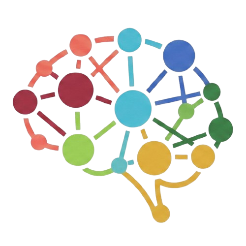

Entenda cada letra e como elas se combinam no seu comportamento.
O DISC é uma leitura de estilo comportamental que mostra como você reage a desafios, pessoas, ritmo e regras.
Pessoas D tendem a agir com rapidez, tomar decisões diretas e manter o foco nos resultados.
Exemplo: um líder que assume o controle em uma crise e busca uma solução imediata.
Pessoas I se conectam facilmente, inspiram os outros e prosperam em ambientes sociais.
Exemplo: alguém que motiva a equipe com entusiasmo e valoriza reconhecimento público.
Pessoas S valorizam confiança, consistência e colaboram em ritmos previsíveis.
Exemplo: um colega de equipe que mantém harmonia e prefere processos claros.
Pessoas C buscam precisão, regras e avaliação detalhada antes de agir.
Exemplo: um analista que revisa dados com cuidado antes de finalizar um relatório.
DISC em prática
Este modelo é usado para entender como pessoas se adaptam a desafios, interagem com colegas e escolhem soluções. Cada letra representa um estilo diferente de resposta:
- D identifica quem busca controle, velocidade e resultados em ambientes competitivos.
- I representa quem desenvolve relacionamentos, influencia o grupo e usa comunicação persuasiva.
- S destaca quem valoriza estabilidade, cooperação e processos confiáveis.
- C evidencia quem observa detalhes, segue normas e prioriza qualidade técnica.
Estudos sobre estilo comportamental apontam que combinação de fatores gera perfis mais ricos do que um único traço. Por isso, o resultado mostrará intensidade relativa de cada DISC e não apenas uma etiqueta única.
Exemplo real de uso
Em uma equipe de projeto, um D define metas, um I motiva o grupo, um S garante estabilidade e um C verifica riscos. Juntos, equilibram velocidade, conexão, segurança e qualidade.
Como interpretar
Um perfil dominante mostra a tendência mais forte em suas escolhas. Os outros DISC ainda são relevantes como suporte ao seu estilo principal.
Por que é importante saber o DISC de quem você pretende contratar
Quando sua empresa conhece o estilo comportamental do candidato, a decisão de contratação passa a ser mais estratégica e menos baseada em primeira impressão.
- Alinha ritmo de trabalho, comunicação e autonomia à cultura da vaga.
- Reduz conflitos e aumenta a probabilidade de contratação assertiva.
- Ajuda a preparar integração, feedback e acompanhamento personalizados.
- Mostra se o candidato se adapta melhor a ambientes dinâmicos, colaborativos ou técnicos.
Como usar DISC com responsabilidade
DISC não substitui entrevistas, referências ou avaliações técnicas. Ele oferece um mapa de tendências comportamentais para você interpretar com contexto e empatia.
Benefícios para equipes e líderes
Uma equipe equilibrada combina perfis: D acelera resultados, I conecta pessoas, S traz estabilidade e C garante qualidade. Saber isso ajuda a distribuir funções e a melhorar a colaboração.